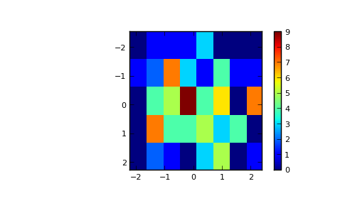

numpy.histogram2d¶
- numpy.histogram2d(x, y, bins=10, range=None, normed=False, weights=None)[source]¶
Compute the bi-dimensional histogram of two data samples.
Parameters : x : array_like, shape(N,)
A sequence of values to be histogrammed along the first dimension.
y : array_like, shape(M,)
A sequence of values to be histogrammed along the second dimension.
bins : int or [int, int] or array_like or [array, array], optional
The bin specification:
- If int, the number of bins for the two dimensions (nx=ny=bins).
- If [int, int], the number of bins in each dimension (nx, ny = bins).
- If array_like, the bin edges for the two dimensions (x_edges=y_edges=bins).
- If [array, array], the bin edges in each dimension (x_edges, y_edges = bins).
range : array_like, shape(2,2), optional
The leftmost and rightmost edges of the bins along each dimension (if not specified explicitly in the bins parameters): [[xmin, xmax], [ymin, ymax]]. All values outside of this range will be considered outliers and not tallied in the histogram.
normed : bool, optional
If False, returns the number of samples in each bin. If True, returns the bin density, i.e. the bin count divided by the bin area.
weights : array_like, shape(N,), optional
An array of values w_i weighing each sample (x_i, y_i). Weights are normalized to 1 if normed is True. If normed is False, the values of the returned histogram are equal to the sum of the weights belonging to the samples falling into each bin.
Returns : H : ndarray, shape(nx, ny)
The bi-dimensional histogram of samples x and y. Values in x are histogrammed along the first dimension and values in y are histogrammed along the second dimension.
xedges : ndarray, shape(nx,)
The bin edges along the first dimension.
yedges : ndarray, shape(ny,)
The bin edges along the second dimension.
See also
- histogram
- 1D histogram
- histogramdd
- Multidimensional histogram
Notes
When normed is True, then the returned histogram is the sample density, defined such that:
where H is the histogram array and
the area of bin {i,j}.Please note that the histogram does not follow the Cartesian convention where x values are on the abcissa and y values on the ordinate axis. Rather, x is histogrammed along the first dimension of the array (vertical), and y along the second dimension of the array (horizontal). This ensures compatibility with histogramdd.
Examples
>>> x, y = np.random.randn(2, 100) >>> H, xedges, yedges = np.histogram2d(x, y, bins=(5, 8)) >>> H.shape, xedges.shape, yedges.shape ((5, 8), (6,), (9,))
We can now use the Matplotlib to visualize this 2-dimensional histogram:
>>> extent = [yedges[0], yedges[-1], xedges[-1], xedges[0]] >>> import matplotlib.pyplot as plt >>> plt.imshow(H, extent=extent, interpolation='nearest') <matplotlib.image.AxesImage object at ...> >>> plt.colorbar() <matplotlib.colorbar.Colorbar instance at ...> >>> plt.show()
(Source code, png, pdf)

{kind=link}